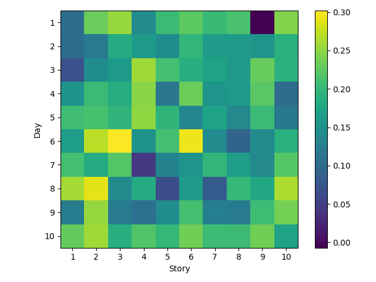
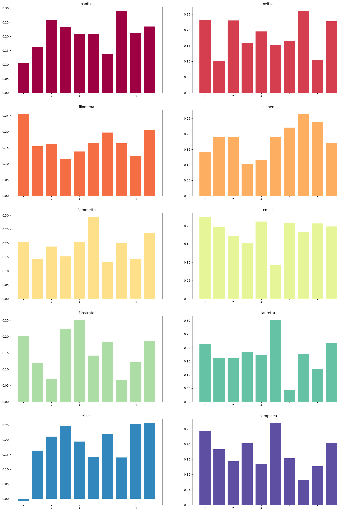

Following the creation of the graph, I decided to try to scrape the stories off of the Decameron website and do an automated analysis. For this, I used Sentiment Analysis, which tries to measure the emotional tone of text. For example, “everything sucks and we’re all going to die” would have a negative sentiment, while “I love my friends, they make me so happy!” would have a more positive sentiment. I ran the analysis on all of the stories, and then stuck them into a handy heat map so it’s easier to refer to. Some things that surprised me were:
Heatmap of Sentiment by Day and Story
Sentiment for the 10 stories from each storyteller
